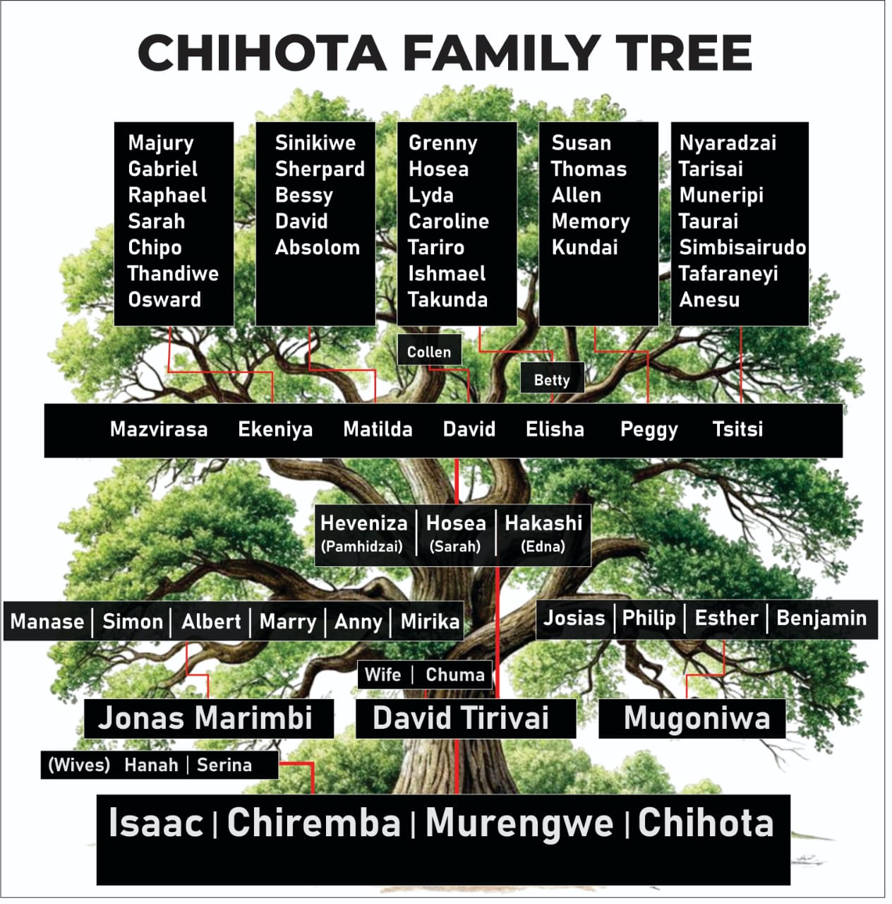

Chihota Family Lineage
Chiremba (Murengwe / Isaac) was the father of David and his brothers Jonas and Mugoniwa, whose mother was Hana.
Mugoniwa was the father of Josias, Philip, and Benjamin, and their sister was Esther.
Jonas (Murambi) was the father of Manase, Simon, and Albert, and their sisters were Mary, Anny, and Mirika.
David (Tirivai) was the father of Hosea and his brothers Heveniza and Hakishi, whose mother was Chuma.
Hosea was the father of David and Elisha, and their sisters were Mazvirasa, Ekenia, Matilda, Peggy, and Tsitsi.
Background
Chiremba (Isaac / Murengwe) was a traditional healer who settled in the Epworth area (formerly Chinamano). He had originally come to heal the local leader Chiriusa, whose home was near present-day Jaggers Msasa.
In 1891, Methodist missionaries arrived in Chinamano, and Chiremba became the first recorded person in Zimbabwe to convert to Methodism.
Chiremba and his family
His two sons David / Tirivai and Mugoniwa passed away during the influenza pandemic between 1915 and 1918. Their brother Jonas / Marimbi took in their children and relocated to Seke, where Chief Seke granted them land.
This land became present-day Jonas / Marimbi Village, where Jonas established the Jonas Methodist Church and Jonas Primary School.
The children taken to Seke were: Heveniza, Hosea, Hakishi, Josias, Philip, Esther, and Benjamin.
Hosea’s Life and Marriage
Hosea grew up in Jonas Village and often travelled to Epworth to visit relatives. He worked as a tinsmith, builder, and tricycle repairer. His craftsmanship benefited the community, and he went on to train his nephews and other locals.
Hosea Chihota
He later worked for the Rhodesia Post Office as a bicycle mechanic, repairing bicycles used by postmen across the region.
In the 1930s, he met his wife Sarah Chitsvatsva from Chitsvatsva Village in Seke.
Sarah Chihota
Their first daughter Mazvirasa passed away at a young age. They later had six more children: Ekenia, Matilda, David, Elisha, Peggy, and Tsitsi.
Descendants of Hosea and Sarah
Ekenia (Born 1933)
Mother of Mejury, Raphael and Gabriel (twins), Sarah (Jnr), Chipo, Thandiwe, and Osward.
Ekenia Chihota
Matilda (Born 1936)
Mother of Sinikiwe, Shepard, Bessy, David (Jnr), and Absolom (twin).
Matilda Chihota
David (Born 1942)
Father of Collen.
David Chihota
Elisha (Born 1945)
Married to Betty Chihota (née Tendayi). Their children: Grenny, Hosea Jnr, Lyda, Caroline, Tariro, Ishmael, and Takunda.
Elisha Chihota
Peggy (Born 1947)
Mother of Susan, Thomas, Allen, Memory, and Kundai.
Tsitsi (Born 19..)
Mother of Nyaradzai, Tarisai, Muneripi, Taurai, Simbisairudo, Tafaraneyi, and Anesu.
Hosea & Sarah Family Pictures
(Front) Peggy, Elisha, Ekenia
(Back) Marakia, Matilda
Peggy, David, Matilda and grandchildren

In Memory of Chirembe

Tombstone for Isaac Murengwe Chihota
Reverend Mudenda (Methodist Church) and Chiremba’s great-grandchild Tawananyasha Chihota lighting a candle in remembrance of Isaac Murengwe Chihota. The celebration marked 100 years since his passing, with family gathering from far and wide for the unveiling of the tombstone.